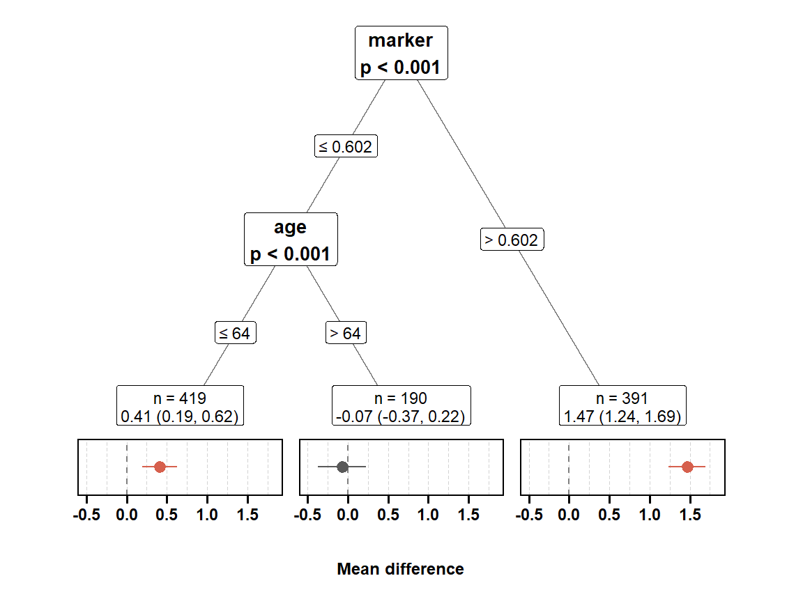
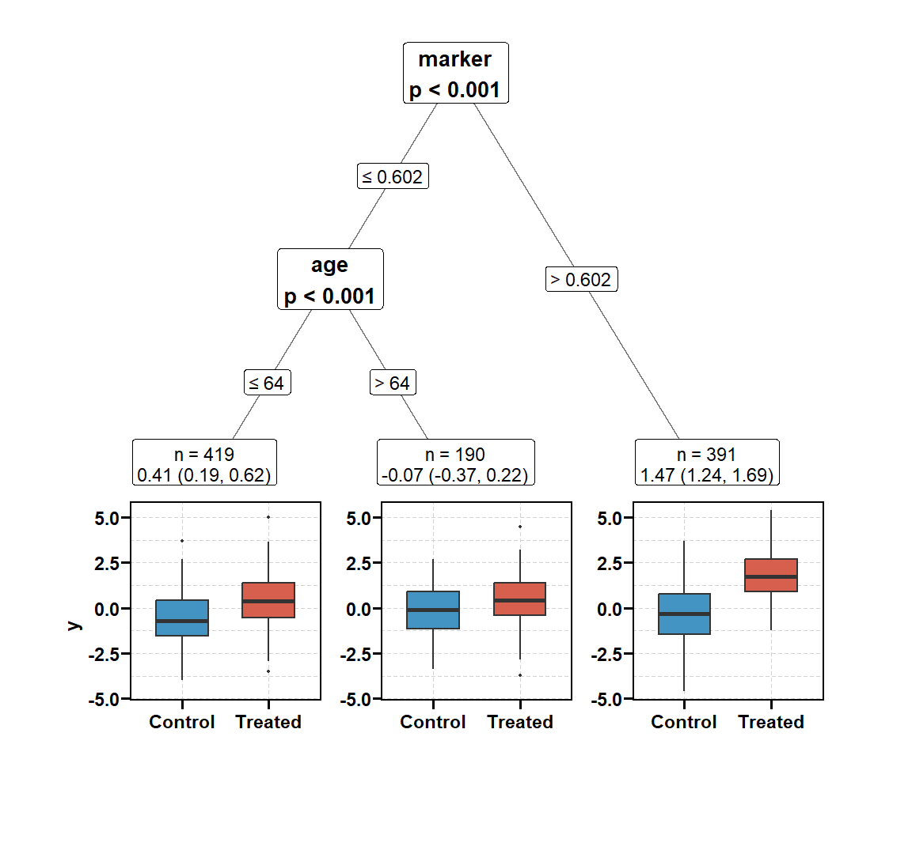
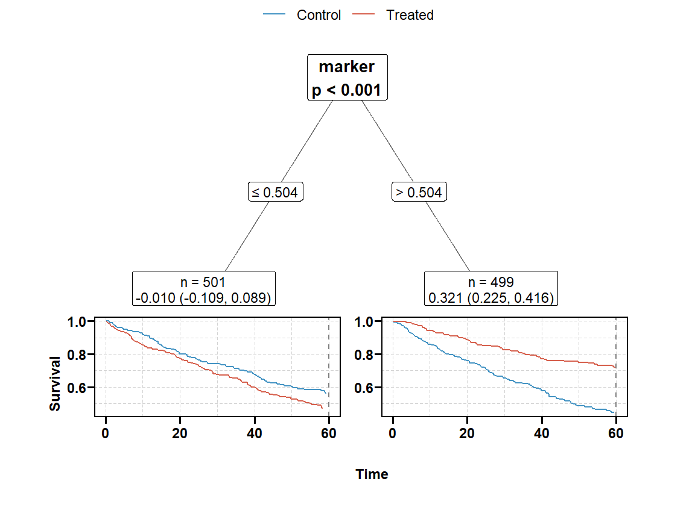
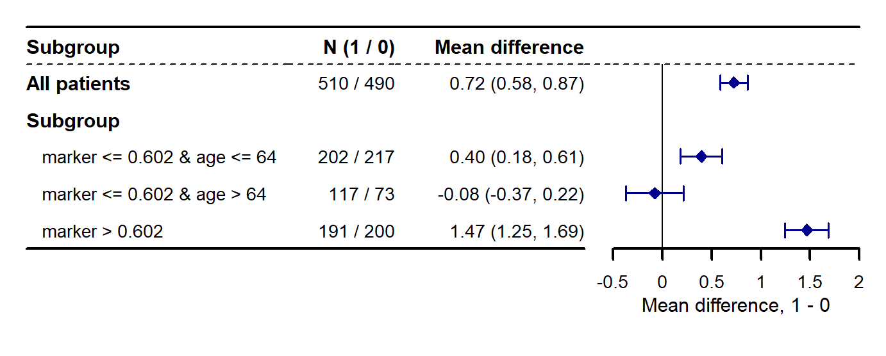

set.seed(20260930)
n <- 2000
d <- data.frame(
age = round(rnorm(n, 60, 10)), # 混杂 + 预后 + 修饰
marker = round(runif(n), 3), # 修饰
frail = round(rnorm(n), 2), # 混杂 + 预后
stage = factor(sample(c("I", "II", "III"), n, replace = TRUE)), # 噪声
smoke = rbinom(n, 1, 0.3)) # 噪声
d$z <- rbinom(n, 1, plogis(0.04 * (d$age - 60) + 0.5 * d$frail))
tau <- 0.3 + 1.5 * (d$marker > 0.6) - 0.8 * (d$age >= 65)
d$y <- round(0.05 * (d$age - 60) + d$frail + d$z * tau + rnorm(n), 3)
adj <- c("age", "marker", "frail", "stage", "smoke")7. 亚组树：get_hte_tree() 与 plt_hte_tree()
causalR 包函数手册
get_hte_tree() 和第 5 页的 get_hte_icf() 回答同一个问题： 亚组该怎么划。区别在做法：iCF 让 20 个因果森林投票，get_hte_tree() 只种一棵树， 每个节点用一个显式的检验决定切不切，p 值直接写在树上。树的生长方式由 method 选择，共 17 种，覆盖 ctree、MOB、CART、policytree 以及本包自己写的 "maxt"（默认）。 不论选哪种，找树和估计效应都用不同的患者（诚实估计）。 plt_hte_tree() 用 ggparty 把树画出来，叶子下方画每个亚组的效应。
data ──split_frac──┬─ 发现集 ─► get_hte() → 每人一个 AIPW 双稳健得分
│ └─ method 在得分（或 CATE 预测、残差、节点模型）上种树
│ 每个节点检验一次，p < alpha 才切，最深 max_depth 层
└─ 估计集 ─► get_hte() → 每个节点的双稳健 ATE 与 95% 区间
└─ plt_hte_tree() / plt_hte_sub(res$est, sub_var = ".rule")get_hte_tree() |
get_hte_icf() |
get_hte_unihtee() |
|
|---|---|---|---|
| 输出 | 一棵树：规则、节点、party 对象 |
一组规则 | 按变量排序的效应量表 |
| 怎么决定切不切 | 每个节点一次检验（"maxt" / ctree / MOB），或交叉验证剪枝（rpart） |
森林投票 + 交叉验证选深度 + 校准检验闸门 | 不切，逐变量回归 |
| 能看到什么 | 切点、每次切分的 p 值、每个节点的效应 | 规则的得票率 | 线性斜率与 BH 校正 p 值 |
| 耗时（n = 2000，连续结局） | 约 1 秒 | 约 30 秒 | 数秒 |
安装与核对环境
remotes::install_github("HUI950319/causalR")
install.packages(c("grf", "partykit", "ggparty", "rpart", "policytree"))rpart 只在 rpart 系列方法、policytree 只在 "policy" 时需要。 本页核对于 2026 年 9 月 29 日，代码块由本站渲染时真实执行：
| 项目 | 值 |
|---|---|
| causalR | 0.0.0.9000（GitHub main） |
| grf / partykit / ggparty | 2.6.1 / 1.3.1 / 1.0.0.1 |
示例数据：两个修饰变量、有混杂
年龄大、衰弱的患者更常接受治疗，二者又影响结局，所以直接比较两组是有偏的。 真实效应由两个阈值决定，四个格子的真值为：
age < 65 |
age >= 65 |
|
|---|---|---|
marker <= 0.6 |
0.3 | −0.5 |
marker > 0.6 |
1.8 | 1.0 |
frail 只影响结局与分组、不修饰效应——一个只看结局的树会去切它。
get_hte_tree()：默认的 max-t 树
res <- get_hte_tree(d, cat_var = "z", adj_var = adj, surv = "y")
res
#> <hte_tree> max-t test tree on doubly robust scores (causal_forest, grf 2.6.1)
#> discovery n = 1000, estimation n = 1000
#> max_depth = 3, alpha = 0.05, min_leaf = 0.05; split on: age, marker, frail, stage, smoke
#>
#> Nodes (split tests on the discovery part, effects on the estimation part):
#> node parent split split_p n estimate conf.low conf.high
#> 1 NA marker <= 0.602 0.000999 1000 0.7248 0.5835 0.866
#> 2 1 age <= 64 0.000999 609 0.2479 0.0746 0.421
#> 3 2 <NA> 0.983017 419 0.3955 0.1830 0.608
#> 4 2 <NA> 0.779221 190 -0.0775 -0.3716 0.217
#> 5 1 <NA> 0.177822 391 1.4674 1.2464 1.688
#>
#> Rules, estimated on the estimation part (ATE difference, 95% CI):
#> rule n_disc n estimate conf.low conf.high p.value
#> marker <= 0.602 & age <= 64 434 419 0.3955 0.183 0.608 2.65e-04
#> marker <= 0.602 & age > 64 191 190 -0.0775 -0.372 0.217 6.05e-01
#> marker > 0.602 375 391 1.4674 1.246 1.688 1.01e-38
#> P for interaction = 2.49e-18打印结果从上到下：
- 表头：生长方式（
max-t test）、在什么上种树（双稳健得分）、发现集与估计集的人数、max_depth/alpha/min_leaf与允许切分的变量。 - 节点表：每个节点一行。
split是送往左子节点的条件，split_p是发现集上该节点 检验的 p 值（叶子也有——那是没通过的检验），n到conf.high是估计集上该节点的 双稳健 ATE。split_p的最小值是 \(1/(1 + 1000)\)，由自助法次数n_boot = 1000决定。 - 规则表：每片叶子一条规则，估计集上的效应、区间和 p 值；最后一行 P for interaction 检验”各叶子效应相等”。
树先按 marker 切，再在 marker 低的一侧按 age 切，两个阈值都落在真值附近。 marker 高的一侧（真值 1.8 与 1.0 混在一起）没有再切：它的检验 p 值是 0.18，1000 人的发现集里分出的约 400 人 不够看清 0.8 的差别。这是树法的常态——没有切不等于没有差别。
返回对象
返回 hte_tree 类的列表：
| 元素 | 内容 |
|---|---|
$rules |
每片叶子一行：leaf、node、rule、发现集人数 n_disc，估计集上的 n、n_treat、estimate、std.error、conf.low、conf.high、p.value、p_inter，口径同 get_hte()$subgroup；"policy" 另有推荐的 action |
$nodes |
每个节点一行：node、parent、depth、terminal、rule（叶子）、variable 与 split（内部节点）、statistic 与 split_p（检验），以及估计集上的效应 |
$tree |
估计集上的 partykit::party 对象，每个节点的 info 就是 $nodes 的一行，可直接交给 ggparty |
$est |
估计集上的 get_hte() 结果（hte_res），$data$.rule 是每人所在的规则 |
attr(, "analysis") |
全部设置、发现集行号 discovery、设计矩阵列的含义 cols、被丢掉的得分数与切分数 |
和真值对照——估计集上每片叶子的真实平均效应：
e <- res$est$data
tau_e <- 0.3 + 1.5 * (e$marker > 0.6) - 0.8 * (e$age >= 65)
data.frame(rule = res$rules$rule,
truth = f2(tapply(tau_e, e$.rule, mean)[res$rules$rule]),
estimate = f2(res$rules$estimate),
ci = paste0("(", f2(res$rules$conf.low), ", ", f2(res$rules$conf.high), ")"))
#> rule truth estimate ci
#> 1 marker <= 0.602 & age <= 64 0.31 0.40 (0.18, 0.61)
#> 2 marker <= 0.602 & age > 64 -0.49 -0.08 (-0.37, 0.22)
#> 3 marker > 0.602 1.52 1.47 (1.25, 1.69)第二片叶子（190 人）的区间没有盖住真值——95% 区间本就有二十分之一的机会落空， 一次结果说明不了更多。同一设计换 40 份数据、每份换一个 seed 重跑（另行运行， 未在本站渲染时执行），138 片叶子的区间覆盖率为 0.95，平均偏差 0.01。
树是怎么种出来的
第 1 步：拆样本、算得分
每组内按 split_frac（默认 0.5）随机抽出发现集。发现集上调用一次 get_hte()， 每位患者得到一个 AIPW 得分
\[ \Gamma_i = \hat\mu_1(X_i) - \hat\mu_0(X_i) + \frac{W_i - \hat e(X_i)}{\hat e(X_i)\,[1 - \hat e(X_i)]}\,\bigl[Y_i - \hat\mu_{W_i}(X_i)\bigr]. \]
\(\Gamma_i\) 在任何亚组里的均值就是该亚组的效应，倾向评分与结局模型只要一个对就成立， 所以在得分上种树，混杂已经被调整掉；在原始结局上种树的方法会被 frail 这类预后变量吸引。
第 2 步：每个节点一次 max-t 检验
对每个候选变量的每个可取切点（默认最多 100 个，在允许的切点里等距取）， 用 Welch t 比较两侧的平均得分，取绝对值最大者作为该变量的统计量。 零分布用 Rademacher 乘子自助法模拟：把中心化后的得分乘以随机正负号， 每次抽样同样做 Welch 标准化；节点 p 值是跨变量的 Westfall–Young min-P。 p 值小于 alpha 就在 p 值最小那个变量的最佳切点上切，然后对两个子节点递归， 直到 max_depth 层、检验不再拒绝，或叶子小于 min_leaf（发现集的比例，默认 5%， 且每组至少 2 人）。
为什么不直接用 ctree 或 MOB：得分天然异方差——倾向评分靠近 0 或 1、结局方差大的地方， 得分的方差都更大，而 ctree 的置换检验与 MOB 的参数稳定性检验都假设同方差。 在效应恒定的模拟里（另行运行，未在本站渲染时执行），根节点的误切率：
| 检验 | 名义水平 | 实测误切率 |
|---|---|---|
| ctree 在 grf 得分上 | 5% | 11.0% |
MOB（lmtree）在 grf 得分上 |
5% | 17.5% |
| 同一设定、同方差得分，ctree / MOB | 5% | 约 4% |
"maxt"（自标准化 Rademacher 乘子） |
5% | 5.8%；换设定复核时 7%–8% |
"maxt" 保留了每个人自己的方差，偏差小得多，但并非精确控制在 5%—— 根节点 p 值落在 0.02–0.05 之间时要保守地读。 检验在节点之间不做多重校正（ctree、MOB 也不做），根节点的检验就是”有没有任何异质性”。
第 3 步：在估计集上估计
按发现集上定下的规则把估计集患者分组，对估计集再调用一次 get_hte()， 每个节点报告双稳健 ATE（estimator = "aipw"，默认）或 TMLE（TMLE 估计）。 估计集没有参与找树，所以这些区间是诚实的；split_frac = 1 时找树与估计用同一批人， 打印结果会注明”not honest”。
17 种 method
后缀说明在什么上种树，前缀说明用什么引擎切：
| 在什么上种树 | maxt |
mob_ |
ctree_ |
rpart_ |
policy |
|---|---|---|---|---|---|
AIPW 得分（_dr） |
"maxt"（默认） |
"mob_dr" |
"ctree_dr" |
"rpart_dr" |
"policy" |
森林的 CATE 预测（_cate） |
"mob_cate" |
"ctree_cate" |
"rpart_cate" |
||
森林的残差，R-learner（_r） |
"mob_r" |
"ctree_r" |
"rpart_r" |
||
差值尺度的节点模型（_abs） |
"mob_abs" |
"ctree_abs" |
|||
比值尺度的节点模型（_rel） |
"mob_rel" |
"ctree_rel" |
|||
Weibull AFT 节点模型（_aft） |
"mob_aft" |
"ctree_aft" |
_dr：与默认相同的得分。ctree / MOB 用各自的检验（见上表的误切率）； rpart 长到max_depth后按交叉验证剪枝，不给 p 值；"policy"找使得分总和最大的 处理 / 不处理分配，恰好长满max_depth层，$rules多一列推荐的action。_cate：在森林的袋外 CATE 预测上种树，即 Virtual Twins、StratifiedMedicine 的两阶段做法。 预测很平滑、噪声小，但它的误差随协变量走（某组人少的地方森林在外推）， 而 ctree / MOB 把预测当独立观测检验，p 值偏乐观。适合当作森林的解释性近似，不宜当发现。_r：在森林的袋外残差 \(\tilde Y = Y - \hat m(X)\)、\(\tilde W = W - \hat e(X)\) 上种树， 节点效应是残差对残差的斜率 \(\sum \tilde W \tilde Y / \sum \tilde W^2\)，切分准则就是 grf 自己的 因果树所近似的 R-loss。残差里没有倒数倾向评分，极端倾向评分的影响比 AIPW 得分小得多； 代价是切分跟随重叠加权（权重 \(\tilde W^2\) 的均值为 \(e(1-e)\)）的效应。报告的效应仍是估计集的双稳健 ATE。_abs/_rel/_aft：不用得分，每个节点重新拟合一个”结局 ~ 治疗 +adj_var“的模型， 检验治疗系数在切分变量上是否稳定（MOB 的lmtree/glmtree、model4you 的pmtree做法）。_abs用lm（连续、0/1 结局，生存结局用 \(S(t)\) 的 Kaplan–Meier 伪观测）；_rel用 logistic（log-OR）或 Cox（log-HR），不适用连续结局；_aft用 Weibull AFT，只适用生存结局。 发现集不需要森林。它们的有效性依赖节点模型：线性调整、节点内效应恒定、Cox 的比例风险、 伪观测要求删失与协变量无关。tree_args = list(adjust = FALSE, parm = "all")回到这些包的默认做法，此时也会切预后变量。_rel在对数比尺度上切而报告差值，修饰依赖尺度，两者可以不一致。
在示例上对比
连续结局可用其中 13 种（_rel、_aft 除外）：
ms <- c("maxt", "mob_dr", "ctree_dr", "rpart_dr", "policy",
"mob_cate", "ctree_cate", "rpart_cate",
"mob_r", "ctree_r", "rpart_r", "mob_abs", "ctree_abs")
cmp <- do.call(rbind, lapply(ms, function(m) {
t0 <- Sys.time()
r <- get_hte_tree(d, cat_var = "z", adj_var = adj, surv = "y", method = m)
data.frame(method = m, leaves = nrow(r$rules),
seconds = round(as.numeric(difftime(Sys.time(), t0, units = "secs")), 1),
splits = paste(na.omit(r$nodes$split), collapse = " | "))
}))
cmp
#> method leaves seconds
#> 1 maxt 3 1.0
#> 2 mob_dr 3 0.9
#> 3 ctree_dr 3 1.0
#> 4 rpart_dr 3 0.7
#> 5 policy 8 0.9
#> 6 mob_cate 7 1.1
#> 7 ctree_cate 8 0.8
#> 8 rpart_cate 7 1.1
#> 9 mob_r 3 0.6
#> 10 ctree_r 3 0.8
#> 11 rpart_r 3 0.7
#> 12 mob_abs 3 0.5
#> 13 ctree_abs 3 0.3
#> splits
#> 1 marker <= 0.602 | age <= 64
#> 2 marker <= 0.6 | age <= 64
#> 3 marker <= 0.6 | age <= 64
#> 4 marker < 0.6005 | age < 64.5
#> 5 marker <= 0.454 | age <= 53 | marker <= 0.178 | age <= 64 | age <= 62 | marker <= 0.533 | marker <= 0.6
#> 6 marker <= 0.616 | age <= 64 | marker <= 0.547 | age <= 67 | marker <= 0.661 | age <= 62
#> 7 marker <= 0.616 | age <= 64 | marker <= 0.547 | age <= 67 | age <= 62 | frail <= -0.78 | marker <= 0.734
#> 8 marker < 0.6165 | age < 64.5 | marker < 0.5475 | age < 67.5 | marker < 0.662 | age < 62.5
#> 9 marker <= 0.6 | age <= 64
#> 10 marker <= 0.6 | age <= 64
#> 11 marker < 0.6005 | age < 64.5
#> 12 marker <= 0.6 | age <= 64
#> 13 marker <= 0.6 | age <= 64_dr、_r、_abs 三类都找到了与默认相同的两刀；_cate 三种切出 7–8 片叶子， 阈值在 0.55–0.66、62–67 之间反复横跳——它们拟合的是森林预测的锯齿，不是真实的两个阈值。 "policy" 按定义长满 3 层、8 片叶子；它回答的是”给谁治疗收益最大”， 不是”哪里的效应不同”，切点只需让推荐的处理不变，未必落在真阈值上。 rpart 系列把切点写成 < 0.6005，其余写成 <= 0.6，两者划分相同。
常用设置
深度、门槛、叶子大小
get_hte_tree(d, "z", adj, surv = "y", max_depth = 2) # 最多 4 片叶子
get_hte_tree(d, "z", adj, surv = "y", alpha = 1) # 不检验，长满 max_depth
get_hte_tree(d, "z", adj, surv = "y", min_leaf = 0.1) # 叶子至少占发现集 10%alpha 只对检验型方法（"maxt"、mob、ctree）有效；rpart 系列按交叉验证剪枝、 "policy" 总长满，给它们传 alpha 会报错。
只允许在指定变量上切
candidate_var 限定切分变量，它们同时并入 adj_var（总会被调整）：
rc <- get_hte_tree(d, cat_var = "z", adj_var = adj, surv = "y",
candidate_var = c("marker", "stage"))
rc$rules[, c("rule", "n", "estimate", "conf.low", "conf.high")]
#> # A tibble: 2 × 5
#> rule n estimate conf.low conf.high
#> <chr> <int> <dbl> <dbl> <dbl>
#> 1 marker <= 0.602 609 0.248 0.0746 0.421
#> 2 marker > 0.602 391 1.47 1.25 1.69事先确定的候选修饰变量（如指南里的分层因素）走这条路，比让树在全部协变量上搜更有检验力。 因子变量默认 factor_encoding = "integer"，按水平顺序取阈值（stage <= II）； "onehot" 允许单独切出一个水平（stage = II 对其余）。规则都用原始水平书写。
TMLE 估计
estimator = "tmle" 只改变估计集上的效应估计，用 grf 的 TMLE （grf::average_treatment_effect(method = "TMLE")）代替 AIPW，树本身不变：
rt <- get_hte_tree(d, cat_var = "z", adj_var = adj, surv = "y", estimator = "tmle")
data.frame(rule = res$rules$rule,
aipw = f2(res$rules$estimate), aipw_se = f2(res$rules$std.error),
tmle = f2(rt$rules$estimate), tmle_se = f2(rt$rules$std.error))
#> rule aipw aipw_se tmle tmle_se
#> 1 marker <= 0.602 & age <= 64 0.40 0.11 0.39 0.11
#> 2 marker <= 0.602 & age > 64 -0.08 0.15 -0.08 0.16
#> 3 marker > 0.602 1.47 0.11 1.48 0.11grf 的 TMLE 是线性修正（每组残差对倒数倾向评分回归），与 AIPW 通常只差第二位小数； 它不保证二分类结局的风险差落在 \([-1, 1]\)。只适用连续与二分类结局—— grf 的因果生存森林只有 AIPW，生存结局传 "tmle" 会报错。
随机试验：已知倾向评分
1:1 随机试验里倾向评分已知，把它作为单个数传进 grf_args，两个森林都不再估计它：
dt <- d
dt$z <- rbinom(n, 1, 0.5)
dt$y <- round(0.05 * (d$age - 60) + d$frail + dt$z * tau + rnorm(n), 3)
rw <- get_hte_tree(dt, cat_var = "z", adj_var = adj, surv = "y",
grf_args = list(W.hat = 0.5))
rw$rules[, c("rule", "n", "estimate", "conf.low", "conf.high")]
#> # A tibble: 2 × 5
#> rule n estimate conf.low conf.high
#> <chr> <int> <dbl> <dbl> <dbl>
#> 1 marker <= 0.601 619 0.0169 -0.147 0.180
#> 2 marker > 0.601 381 1.35 1.13 1.58$est$fit$W.hat 此时全为 0.5，得分里不再有倾向评分的估计误差。 这次只切出 marker：低的一侧 age 的两个格子（0.3 与 −0.5）混在一起， 估计值接近两者按人数加权的平均。能否再切一刀取决于这一份发现集的噪声， 已知倾向评分不保证切得更深。逐行的 W.hat、Y.hat、sample.weights、clusters 不被接受——两个森林各用一半的行， 逐行向量对不上。
无修饰时
效应恒为 0.5，其余不变：
d0 <- d
d0$y <- round(0.05 * (d$age - 60) + d$frail + d$z * 0.5 + rnorm(n), 3)
r0 <- get_hte_tree(d0, cat_var = "z", adj_var = adj, surv = "y")
r0$rules[, c("rule", "n", "estimate", "conf.low", "conf.high")]
#> # A tibble: 1 × 5
#> rule n estimate conf.low conf.high
#> <chr> <int> <dbl> <dbl> <dbl>
#> 1 All patients 1000 0.491 0.356 0.625根节点检验 p = 0.06，不切，只剩”全部患者”一条规则， 效应就是整体 ATE。此时 plt_hte_tree() 会报错提示没有树可画。
生存结局
surv = TRUE（默认）读 time 与 DSS（1 = 事件），在 time 时刻的生存概率差 \(S_1(t) - S_0(t)\) 上种树与估计；grf_args = list(target = "RMST") 改为 RMST 差。
ds <- d[, c(adj, "z")]
ev <- rexp(n, 0.012 * exp(0.03 * (d$age - 60) + 0.3 * d$frail -
d$z * (0.1 + 0.9 * (d$marker > 0.6))))
cens <- pmin(rexp(n, 0.006), 120)
ds$time <- round(pmin(ev, cens), 2)
ds$DSS <- as.integer(ev <= cens)
rs <- get_hte_tree(ds, cat_var = "z", adj_var = adj, time = 60)
rs$rules[, c("rule", "n", "estimate", "conf.low", "conf.high", "p.value")]
#> # A tibble: 2 × 6
#> rule n estimate conf.low conf.high p.value
#> <chr> <int> <dbl> <dbl> <dbl> <dbl>
#> 1 marker <= 0.504 501 -0.0100 -0.109 0.0889 8.43e- 1
#> 2 marker > 0.504 499 0.321 0.225 0.416 4.90e-11治疗只在 marker > 0.6 的人身上明显降低风险。树在 marker 上切了一刀， 切点落在 0.504，比真值 0.6 偏低—— 生存得分的噪声比连续结局大，切点的精度相应变差。 生存结局另外可用 "mob_rel" / "ctree_rel"（Cox，log-HR 尺度）与 "mob_aft" / "ctree_aft" （Weibull AFT）；报告的效应仍是生存概率差。
plt_hte_tree()：画树
plt_hte_tree(res)
内部节点写着切分变量和检验 p 值，边上是切分条件；每片叶子上方是估计集人数与 效应（95% 区间），下方的面板共用一个横轴。默认 type = "effect" 画区间： 高于 0 为红、低于 0 为蓝、跨过 0 为灰。"rpart_*" 与 "policy" 没有检验，节点上不显示 p 值； "policy" 的叶子另标推荐的处理。
其余四种面板：
type |
面板 | 适用结局 |
|---|---|---|
"effect" |
效应与 95% 区间（默认） | 全部 |
"dr" |
每人 AIPW 得分的箱线图，点为均值（即该叶子的双稳健效应） | 全部 |
"box" |
两组结局的箱线图 | 连续 |
"bar" |
两组结局均值（二分类为事件比例）与 95% 区间 | 连续、二分类 |
"km" |
两组到 time 为止的 Kaplan–Meier 曲线，虚线标出 time |
生存 |
"box"、"bar"、"km" 是未调整的组间比较，差值不必等于标签上的双稳健效应—— 本例治疗组更老、更衰弱，结局本就偏高，未调整的差会被抬高：
plt_hte_tree(res, type = "box")
plt_hte_tree(rs, type = "km")
面板画的是估计集患者（split_frac = 1 时为全部患者）；p 值来自发现集。 返回 ggplot，attr(p, "plot_size") 是排版用的宽高（英寸）。保存走统一的 save 参数 （本页不执行，以免渲染时往站点目录写文件）：
plt_hte_tree(res, save = list(filename = "hte_tree.pdf"))叶子的效应也可以画成森林图——$est 就是估计集上的 get_hte() 结果：
plt_hte_sub(res$est, sub_var = ".rule",
label_column_list = c(.rule = "Subgroup"))
参数
get_hte_tree()
| 参数 | 默认 | 说明 |
|---|---|---|
data |
— | 数据框 |
cat_var |
— | 二分类暴露列，编码同 get_hte() |
adj_var |
— | 森林调整的协变量；不给 candidate_var 时也是切分变量。缺暴露或结局的行被丢掉 |
candidate_var |
NULL |
只允许在这些变量上切，同时并入 adj_var。切分变量须为数值、因子、字符或逻辑型且无缺失 |
surv |
TRUE |
TRUE 读 time + DSS；一个列名为连续或 0/1 结局。竞争风险（FALSE）不支持 |
time |
120 |
生存结局的时间点，仅 surv = TRUE |
method |
"maxt" |
17 种之一，见 17 种 method |
max_depth |
3 |
最多切几层（最多 8 片叶子），可为 Inf；"policy" 须有限 |
alpha |
0.05 |
检验型方法的切分门槛，\((0, 1]\)；1 为长满。rpart 系列与 "policy" 不接受 |
min_leaf |
0.05 |
叶子占发现集的最小比例，\([0, 0.5)\)；另要求每组至少 2 人 |
factor_encoding |
"integer" |
因子按水平顺序取阈值；"onehot" 可单独切出一个水平。同时传给森林 |
split_frac |
0.5 |
每组内用于发现的比例；1 为找树与估计同一批人（不诚实） |
estimator |
"aipw" |
估计集的节点效应："aipw" 或 "tmle"（仅连续、二分类） |
tree_args |
list() |
所选 method 的设置，见下表；局部覆盖保留其余默认，给别的方法的字段报错 |
grf_args |
list() |
转给两次 get_hte()；逐行字段不接受，单个已知 W.hat 可以 |
seed |
123 |
拆样本、自助法与 rpart 分折的种子，也是森林种子（grf_args 未给 seed 时）；结束后恢复全局随机数状态 |
verbose |
FALSE |
报告拆样本人数、丢掉的得分与因缺组丢掉的切分 |
tree_args 的字段：
| 适用方法 | 字段与默认 |
|---|---|
"maxt" |
n_boot = 1000（每节点自助次数，0 不给 p 值、须配 alpha = 1）；max_cuts = 100（每列最多试几个切点） |
| ctree 系列 | testtype = "Bonferroni"，或 "Univariate" / "MonteCarlo" |
| mob 系列 | trim = 0.1（稳定性检验两端剪掉的比例） |
| rpart 系列 | xval = 10（交叉验证折数，0 不剪枝）；cp_rule = "min" 或 "1se" |
_abs / _rel / _aft |
adjust = TRUE（节点模型调整 adj_var）；parm = "treatment"（只检验治疗系数）或 "all" |
"policy" |
cost = 0（治疗须超过的效应）；better = "higher" 或 "lower"（不良事件）；split_step = NULL（每 1000 人跳 1 个切点） |
plt_hte_tree()
| 参数 | 默认 | 说明 |
|---|---|---|
x |
— | get_hte_tree() 的结果，至少切过一次 |
type |
"effect" |
"effect" / "dr" / "box" / "bar" / "km" |
save |
list() |
非空时经 RegR::save_plt() 另存 PDF，缺省宽高取 attr(p, "plot_size") |
耗时
按样本量逐个 method 计时。数据为模拟数据：6 个协变量（5 个数值、1 个三水平因子）， 有混杂，效应随一个阈值变化；参数全用默认（max_depth = 3、AIPW、发现集与估计集各一半）。 在本机（Windows R，24 线程，grf 默认用满）上每格单次运行，未在本站渲染时执行。单位：秒。 1 千例一档含零点几秒的波动。
连续结局，总耗时：
| method | 1 千 | 2 千 | 5 千 | 1 万 | 2 万 |
|---|---|---|---|---|---|
"maxt" |
1.7 | 1.2 | 2.3 | 3.8 | 7.1 |
"ctree_dr" |
0.7 | 0.9 | 1.6 | 2.8 | 6.0 |
"ctree_cate" |
0.5 | 0.8 | 1.6 | 3.1 | 5.8 |
"ctree_abs" |
0.3 | 0.4 | 0.7 | 1.5 | 3.5 |
"ctree_r" |
0.5 | 0.7 | 1.5 | 2.8 | 5.7 |
"rpart_dr" |
0.7 | 0.9 | 1.5 | 2.3 | 5.7 |
"rpart_cate" |
0.6 | 0.7 | 1.5 | 2.9 | 6.0 |
"rpart_r" |
0.6 | 0.8 | 1.6 | 2.8 | 5.9 |
"policy" |
0.5 | 1.1 | 1.8 | 3.8 | 9.8 |
"mob_dr" |
0.5 | 1.0 | 2.1 | 4.2 | 10.6 |
"mob_cate" |
0.7 | 1.1 | 2.3 | 5.2 | 14.7 |
"mob_abs" |
0.3 | 0.6 | 1.9 | 5.6 | 21.6 |
"mob_r" |
0.7 | 0.9 | 2.0 | 3.5 | 9.1 |
生存结局（time = 60），总耗时：
| method | 1 千 | 2 千 | 5 千 | 1 万 | 2 万 |
|---|---|---|---|---|---|
"maxt" |
2.0 | 1.8 | 4.2 | 9.1 | 27.7 |
"ctree_dr" |
0.9 | 1.2 | 3.2 | 8.0 | 25.1 |
"ctree_cate" |
0.8 | 1.4 | 3.1 | 8.1 | 25.8 |
"ctree_abs" |
0.4 | 0.7 | 1.6 | 4.1 | 12.9 |
"ctree_rel" |
0.5 | 0.7 | 1.5 | 4.1 | 13.7 |
"ctree_aft" |
0.6 | 0.5 | 1.6 | 4.0 | 13.6 |
"ctree_r" |
0.7 | 1.2 | 3.0 | 8.1 | 25.8 |
"rpart_dr" |
0.8 | 1.3 | 3.0 | 8.3 | 25.5 |
"rpart_cate" |
0.8 | 1.2 | 3.0 | 8.4 | 25.4 |
"rpart_r" |
0.9 | 1.2 | 3.1 | 8.5 | 25.4 |
"policy" |
0.9 | 1.3 | 3.6 | 10.2 | 30.8 |
"mob_dr" |
1.0 | 1.6 | 3.4 | 9.5 | 35.1 |
"mob_cate" |
1.0 | 1.4 | 3.8 | 11.4 | 41.4 |
"mob_abs" |
0.4 | 0.7 | 2.8 | 9.4 | 38.6 |
"mob_r" |
0.8 | 1.3 | 3.2 | 9.4 | 33.6 |
"mob_rel"（Cox） |
0.4 | 4.0 | 18.6 | 92.1 | 406 |
"mob_aft"（Weibull） |
0.3 | 5.2 | 29.5 | 135 | 483 |
总耗时里扣掉两次 get_hte() 森林拟合，剩下的是建树与估计集上的汇总。 ctree 与 rpart 系列这部分在 2 万例时也不超过 0.2 秒，其余方法如下：
| method | 连续 1 万 | 连续 2 万 | 生存 1 万 | 生存 2 万 | 样本量翻倍 |
|---|---|---|---|---|---|
"maxt" |
0.8 | 1.4 | 0.7 | 1.5 | 约 ×2 |
"policy" |
1.1 | 4.2 | 1.4 | 6.3 | 约 ×4 |
"mob_dr" |
1.5 | 5.0 | 1.6 | 8.3 | 约 ×4 |
"mob_r" |
0.9 | 3.6 | 1.4 | 7.8 | 约 ×4 |
"mob_cate" |
2.3 | 8.6 | 3.3 | 15.2 | 约 ×4 |
"mob_abs" |
4.5 | 19.1 | 5.4 | 25.2 | 约 ×4 |
"mob_rel" |
— | — | 88.5 | 394 | 约 ×4 |
"mob_aft" |
— | — | 131 | 471 | 约 ×4 |
三点读法：
- 森林占大头。 除 MOB 与
"policy"外，总耗时几乎全是森林拟合。每次调用拟合两个森林 （发现集、估计集各一个）；_abs/_rel/_aft只拟合估计集那一个，所以约快一倍。 生存森林比连续结局的森林慢，2 万例时两次拟合约 26 秒，连续结局约 6 秒。 样本再大时，每一半超过 1 万行，get_hte()会自动改种 200 棵树（grf 默认 2000）， 见第 1 页，森林耗时不再随样本量线性增长。 - MOB 的建树时间约按 \(n^2\) 增长（样本量翻倍，时间约 ×4）。
partykit::mob()在每个候选切点 两侧重新拟合节点模型，连续变量的候选切点数又与 \(n\) 同阶。"mob_rel"、"mob_aft"每次重拟合是一次 Cox / Weibull 回归，1 万例已要 1.5–2.3 分钟，2 万例要 7–8 分钟。 - 大样本优先
"maxt"、ctree 与 rpart 系列。"maxt"每列只试max_cuts（默认 100）个切点、 自助次数固定，建树时间近似线性；ctree 与 rpart 的建树时间可以忽略。
读结果的规矩
- 树是一次发现，不是确认。 换一个
seed拆样本，切点乃至切分变量都可能变； 重要的结论要在独立数据上验证，或与get_hte_icf()、get_hte_unihtee()交叉印证。 - p 值属于发现集，效应属于估计集。 节点上的
split_p说明”这一刀是不是噪声”， 叶子的区间说明”这组效应多大”，两者用的是不同患者。 - 没切不等于没有差别。 发现集只有一半患者，小于检验力的修饰会被漏掉（本例
marker高的一侧）。 "maxt"的根节点检验略偏宽松（模拟 6%–8%），p 值刚过 0.05 的切分要保守解读； ctree / MOB 在得分上更宽松（11%–18%）。_cate与"policy"的树不是效应修饰的检验。 前者描述森林预测，p 值偏乐观； 后者总是长满max_depth，回答的是分配问题。- 修饰依赖尺度。
_rel、_aft在比值或时间尺度上切，报告的却是差值；二分类与生存结局 可以两种都看。 - 未调整面板只作描述。
"box"、"bar"、"km"的组间差含混杂，效应以标签上的双稳健估计为准。
参考文献
- Athey S, Tibshirani J, Wager S (2019). Generalized random forests. Annals of Statistics 47(2):1148–1178.
- Athey S, Wager S (2021). Policy learning with observational data. Econometrica 89(1):133–161.
- Hansen BE (2000). Testing for structural change in conditional models. Journal of Econometrics 97(1):93–115.
- Hothorn T, Hornik K, Zeileis A (2006). Unbiased recursive partitioning: a conditional inference framework. Journal of Computational and Graphical Statistics 15(3):651–674.
- Nie X, Wager S (2021). Quasi-oracle estimation of heterogeneous treatment effects. Biometrika 108(2):299–319.
- Westfall PH, Young SS (1993). Resampling-Based Multiple Testing. Wiley.
- Zeileis A, Hothorn T, Hornik K (2008). Model-based recursive partitioning. Journal of Computational and Graphical Statistics 17(2):492–514.
各函数的完整说明见包内帮助页：?get_hte_tree、?plt_hte_tree。